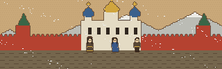

2
лист I RU EN TR
RU EN TR

Новгород. Зима 1243 года
Тысячи жизней
Летопись одной жизни. Чьей? Решит жребий.
где и когда?Новгород…
сословие?купцы…
пол?дочь…
Брось жребийи узнай, кем родишься
Продолжить: Ефросинья, 12 лет (Новгород)
Летопись пишет один человек. v0.9 · что нового